部署网站 #
部署到GitHub Pages #
首先，你需要拥有一个名为 <账号>.github.io 的 GitHub 公开仓库，然后把网站源代码 push 上去。（不要只上传 public 文件夹，建议连根上传，方便管理）。
git add .
git remote add github <仓库地址>
git commit -m "说明"
git branch -m main
git push -u github main
然后可以在设置里面看到：


/(root) 改为 /public，点保存后等待部署完成。
至此，你就可以用 GitHub 授予的二级域名来访问你的网站了。

优点 #
- GitHub 的二级域名易于记忆
- 单平台一站式配置， 无需考虑协议、证书等
- 国内可访问
缺点 #
- 配置较低，加载速度慢
- 国内及附近无加速节点，访问慢，时常抽风
- GitHub Pages 把百度的爬虫拦截，站点无法被百度收录
Ping 结果 #

部署到 Vercel #
如果你没有域名，慎用 Vercel，因为 Vercel 被GFW污染，不用自己的域名做解析就无法访问部署好的网站。
建立仓库、push的过程与 GitHub Pages 相同，但仓库不用必须公开，仓库名自定义。
访问 Vercel网站
，用 GitHub 登录。

-
新建项目
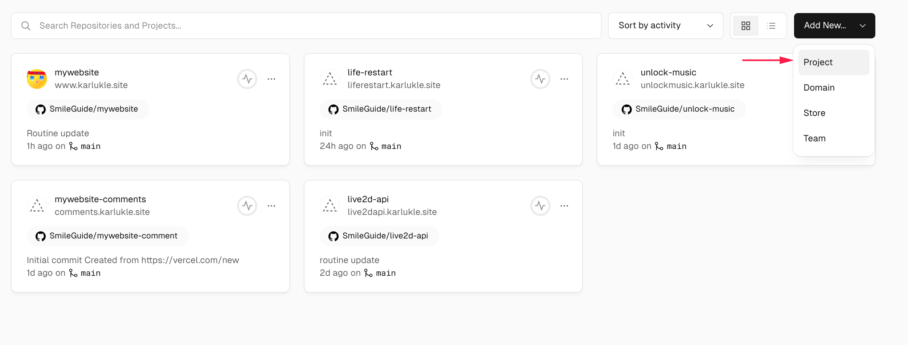
-
载入仓库
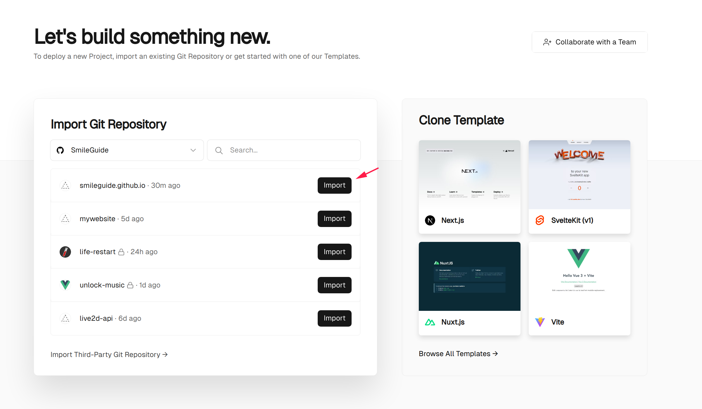
-
配置如下，点击部署
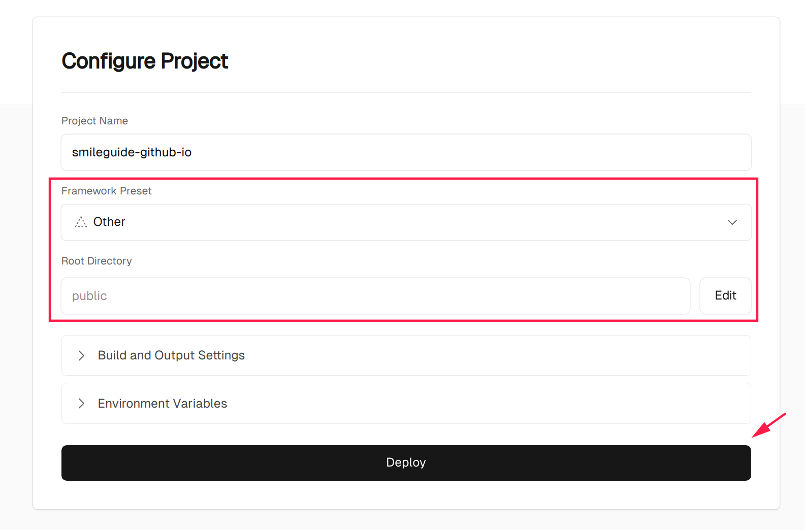
-
等待部署完成后，进入仪表板
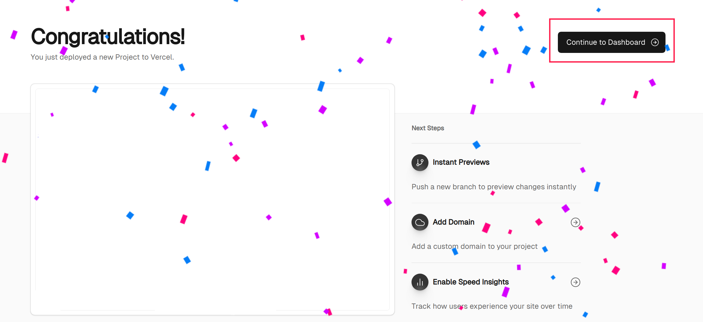
至此，基本的 Vercel 部署已经完成。但如果想通过 Vercel 授予的二级域名访问网站，可能需要魔法.:dog:


优点 #
- 自带CDN，有香港节点
- 服务器性能较高，速度较快
- 每次push 后自动部署
- 自定义程度较高，可绑定多个域名，也可以设置解析
缺点 #
- 需要绑定域名
Ping 结果 #
- *.vercel.app

- 绑定域名后

注册域名和ICP备案 #
随便找一个国内的服务商，按照流程购买域名，需要实名认证。本域名是在腾讯云注册的。


接下来，为购买国内CDN加速，你需要将网站进行ICP备案。各服务商和各省管局有不同的要求，请遵照要求进行备案。
备案完成后，三十天内要在根域名主页尾部挂好ICP备案标识，否则抽查到会被罚款。
配置CDN #
以腾讯云加速 Vercel 为例（既然已经购买了域名，选择 Vercel 提供的服务自然更好些）。
境内外分流 #
-
如果你用根域名做CDN加速
- 删除原有的该站对 Vercel 的解析
- 添加两条CNAME解析
主机记录 记录类型 线路类型 记录值 www CNAME 境外 cname.vercel-dns.com. @ A 境外 76.76.21.21
-
如果你做CDN加速的是二级域名
- 删除原有的该站对 Vercel 的解析
- 添加一条CNAME解析
主机记录 记录类型 线路类型 记录值 <子域>CNAME 境外 cname.vercel-dns.com.
添加回源解析 #
首先来到腾讯云DNS解析控制台，添加一条CNAME解析：
| 主机记录 | 记录类型 | 线路类型 | 记录值 |
|---|---|---|---|
| source | CNAME | 默认 | cname.vercel-dns.com. |

然后来到 Vercel 给要使用CDN的网站添加一个自定义的二级域名（如 <自定义>.<你的域名>.<你的后缀> ）

配置CDN #
-
到腾讯云CDN控制台，点击添加域名
-
输入你已备案的域名（**给根域名添加CDN需带www**），按照下图进行配置
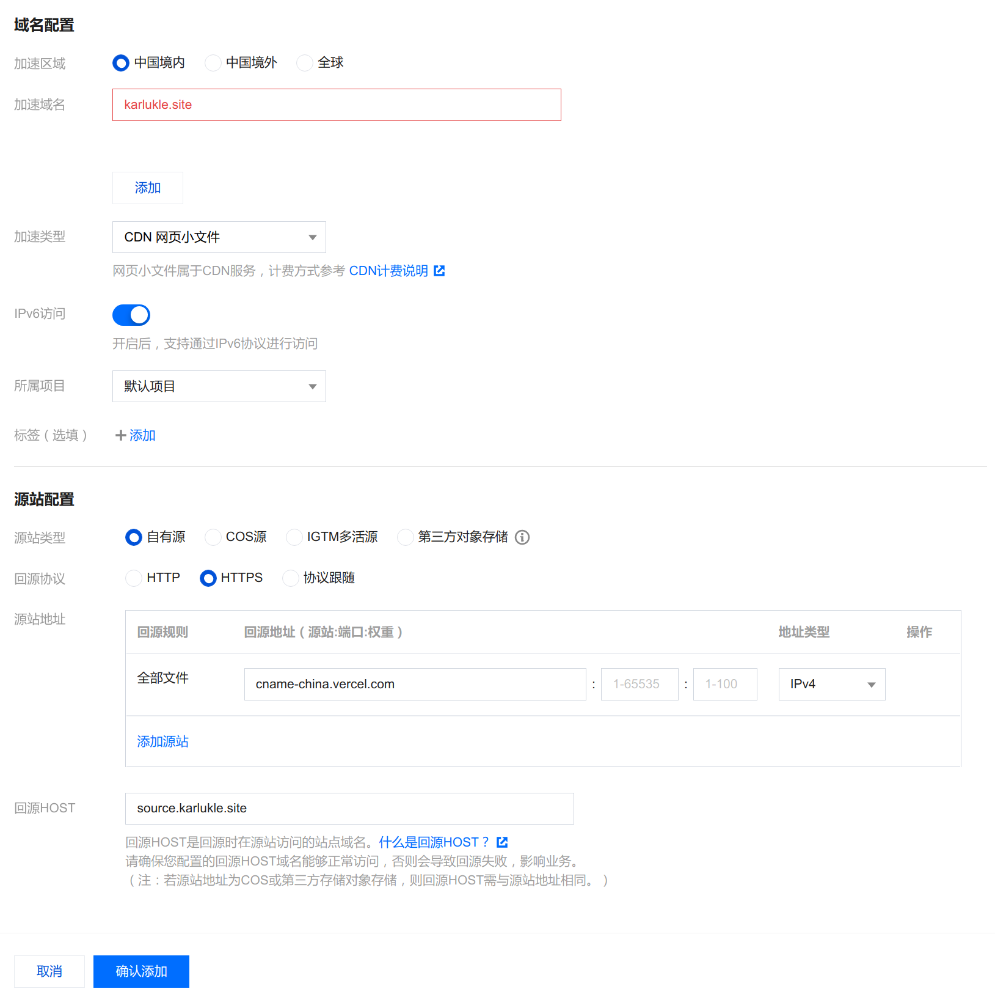
-
自定义缓存配置
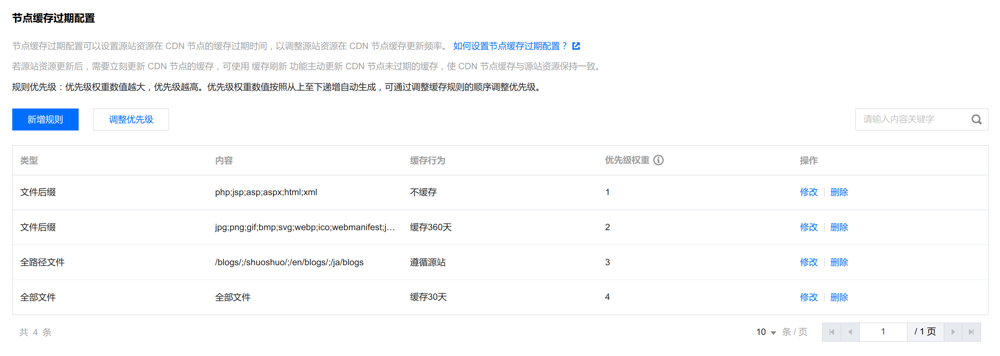
（你可以参照我的配置） -
自定义压缩配置
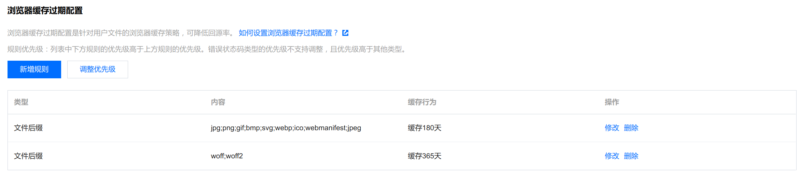
-
按需配置用量封顶
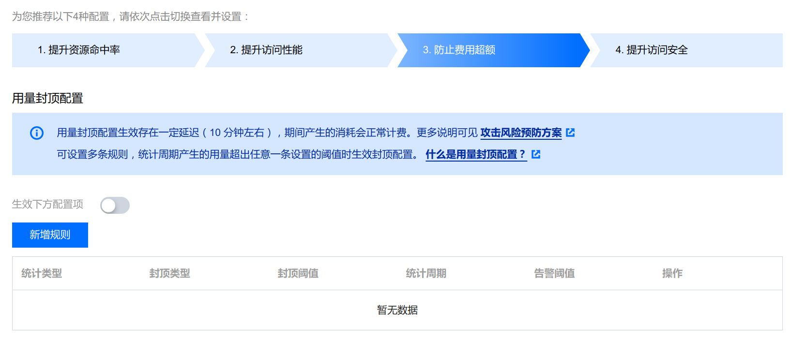
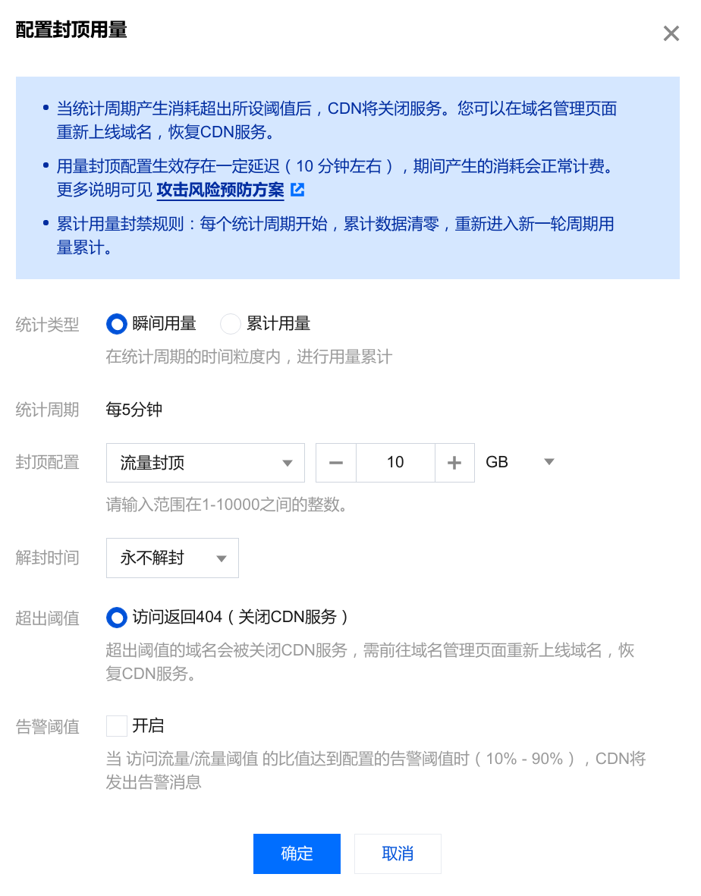
-
启用HTTPS服务，选择刚才配置好的证书
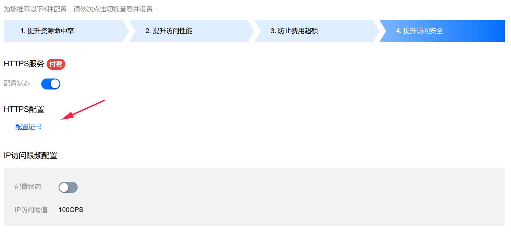
-
点击一键配置，CDN的CNAME解析记录就会自动添加
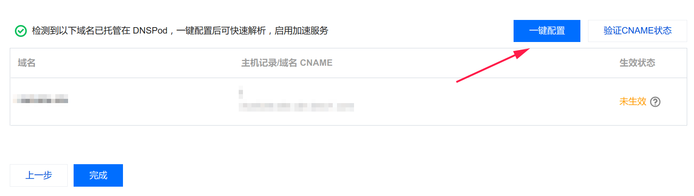
※ 如果给根域名加速，你还要把不带www的根域名进行如下配置（这是为不带www的访问自动加上www）：


| 全路径匹配 | 待重写URL | 目标Host | 目标Path |
|---|---|---|---|
√ |
/* |
https://www.<你要加速的域名>.<后缀> |
/$1 |
等待片刻，CDN就配置完成了。
Ping 结果 #
- CDN加速前

- CDN加速后

–完–